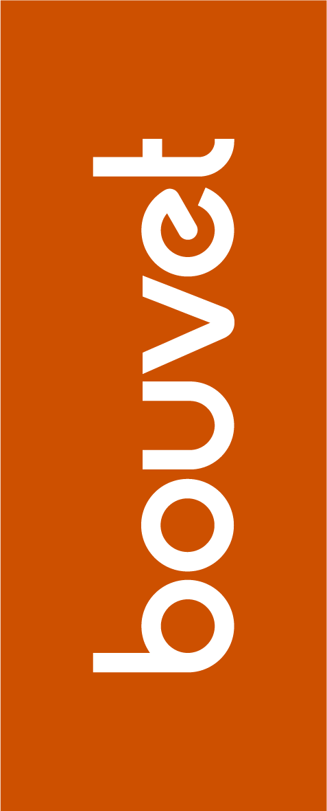

layout: true <div class="my-footer"></div> --- class: center # WebVR  ??? --- # What is A-Frame? - Web framework for building VR - Using HTML - Works on Vive, Rift, Daydream, GearVR, Mixed Reality VR headsets and desktop (even Edge!) - Easy to use and start --- # Basic example code .code[ ```HTML <html> <head> <script src="https://aframe.io/releases/0.9.1/aframe.min.js"></script> </head> <body> <a-scene> <a-box position="-1 0.5 -3" rotation="0 45 0" color="#4CC3D9"></a-box> <a-sphere position="0 1.25 -5" radius="1.25" color="#EF2D5E"></a-sphere> <a-cylinder position="1 0.75 -3" radius="0.5" height="1.5" color="#FFC65D"></a-cylinder> <a-plane position="0 0 -4" rotation="-90 0 0" width="4" height="4" color="#7BC8A4"></a-plane> <a-sky color="#ECECEC"></a-sky> </a-scene> </body> </html> ``` ] --- # Basic example UI  ---